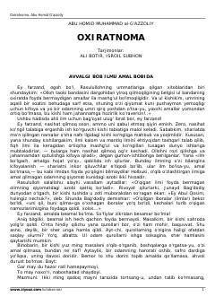

OIlm va amalning ahamiyati hamda oxirat taraddudi haqida ibratli asar.
Mazkur kitobda ilm va amalning ahamiyati, oxiratga tayyorgarlik ko'rish, ibodat va uning fazilatlari haqida so'z boradi. Abu Homid G'azzoliy qalamiga mansub ushbu asar insonni yaxshi amallarga undab, nafs tarbiyasi va oxirat taraddudi xususida ibratli nasihatlar beradi.